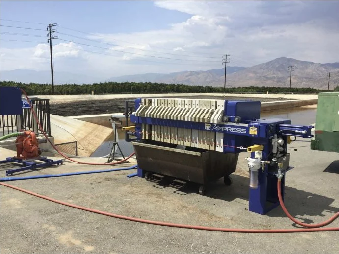

Municipal Settling-Pond Dewatering Pilot
A 90-day rental program helped a municipality prove that accumulated runoff solids could be conditioned, captured, and discharged as dry filter cake.

The Existing Pond-Cleaning Process
The municipality used settling ponds as the first treatment step for mountain runoff entering its drinking-water system. Suspended solids settled as water crossed each pond. When solids accumulated high enough to carry over, operators switched ponds and began a slow cleanout process.
After pumping a pond as dry as possible, a bulldozer pushed the remaining liquid slurry onto an adjacent drainage area. The solids then dried in the sun. Returning a pond to useful capacity could take months.
What the Rental Trial Needed to Prove
The field test had two practical goals: confirm that the fine pond solids could be retained by a filter press and determine whether the press could produce a manageable dry cake without blinding the filter cloths.
Ninety Days of Process Development
During the 90-day rental period, the municipality worked with a local chemical supplier to establish a coagulant and polymer program. The conditioning step helped the solids separate cleanly and protected filtration performance throughout the test.
A Proven Basis for Scale-Up
The rental pilot successfully demonstrated solids capture and dry-cake formation. Based on the field results, the municipality purchased a full-scale filter press approximately ten times larger than the rental unit. The extended trial gave the team direct operating evidence for that scale-up decision.
Need to prove a municipal dewatering process?
Use a rental pilot to test the slurry, conditioning program, cake quality, and operating cycle at your site.